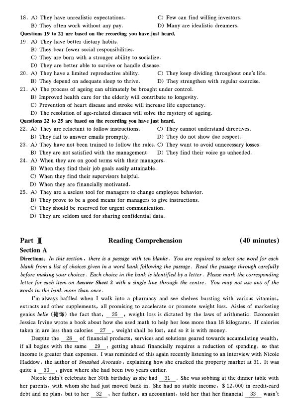

第 1 / 8 页

Part I
2021 � 6 J1 *��ffi*f&::!M:10!(=:)
Writing
(30 minutes)
Directions: For this part, you are allowed 30 minutes to write an essay based on the chart below. You
should start your essay with a brief description of the chart and comment on China's achievements in higher
education. You should write at least 150 words but no more than 200 words.
Gross enrolment ratio in higher education in China (1990 - 2019)
Part ][
Listening Comprehension
(30 minutes)
Section A
Directions: In this section, you will hear two long conversations. At the end of each conversation, you will
hear four questions. Both the conversation and the_ questions will be spoken only once. After
you hear a question , you must choose the best answer from the four choices marked A) , B) , C)
and D). Then mark the corresponding letter on Answer Sheet 1 with a single line through the
centre.
Questions 1 to 4 are based on the conversation you have just heard.
1. A) Weird.
B) Efficient.
C) Tolerant.
2. A) They are arrogant.
C) They are ambitious.
D) Toxic.
B) They are ignorant.
D) They are accommodating.
3. A) They can think big.
C) They can break conventions.
B) They can air their views.
D) They can work flexible hours.
4. A) It can alter people's mindsets.
C) It enables people to learn and grow.
B) It can lead to new discoveries.
D) It is conducive to critical thinking.
Questions 5 to 8 are based on the conversation you have just heard.
5. A) He kept looking for the best place to stay.
C) He had a great time sightseeing and relaxing.
B) He met many tourists from other countries.
D) He managed to visit a different city each day.
6. A) Prioritize what is essential to their best advantage.
B) Stretch out the process in search of the optimal.
C) Deliberate the consequences that may occur.
D) Take all relevant factors into consideration.
查看 / 复制本页文字
本页源文件的文字编码有异常。原卷显示正常；复制文字需对照原卷核查。
Part I 2021 � 6 J1 *��ffi*f&::!M:10!(=:) Writing (30 minutes) Directions: For this part, you are allowed 30 minutes to write an essay based on the chart below. You should start your essay with a brief description of the chart and comment on China's achievements in higher education. You should write at least 150 words but no more than 200 words. Gross enrolment ratio in higher education in China (1990 - 2019) Part ][ Listening Comprehension (30 minutes) Section A Directions: In this section, you will hear two long conversations. At the end of each conversation, you will hear four questions. Both the conversation and the_ questions will be spoken only once. After you hear a question , you must choose the best answer from the four choices marked A) , B) , C) and D). Then mark the corresponding letter on Answer Sheet 1 with a single line through the centre. Questions 1 to 4 are based on the conversation you have just heard. 1. A) Weird. B) Efficient. C) Tolerant. 2. A) They are arrogant. C) They are ambitious. D) Toxic. B) They are ignorant. D) They are accommodating. 3. A) They can think big. C) They can break conventions. B) They can air their views. D) They can work flexible hours. 4. A) It can alter people's mindsets. C) It enables people to learn and grow. B) It can lead to new discoveries. D) It is conducive to critical thinking. Questions 5 to 8 are based on the conversation you have just heard. 5. A) He kept looking for the best place to stay. C) He had a great time sightseeing and relaxing. B) He met many tourists from other countries. D) He managed to visit a different city each day. 6. A) Prioritize what is essential to their best advantage. B) Stretch out the process in search of the optimal. C) Deliberate the consequences that may occur. D) Take all relevant factors into consideration.
第 2 / 8 页
7 . A) Time pressure.
C) Modern technology.
B) Tight budget.
D) Fierce competition.
8. A) Research as many different options as possible. C) Focus on what is practical.
B) Avoid going over the same options repeatedly.
D) Trust their gut instinct.
Section B
Directions: In this section , you will hear two passages. At the end of each passage , you will hear three or
four questions. Both the passage and the questions will be spoken only once. After you hear a question , you
must choose the best answer from the four choices marked A ) , B) , C) and D ) . Then mark the
corresponding letter on Answer Sheet 1 with a single line through the centre .
Questions 9 to 11 are based on the passage you have just heard.
9. A) It is beneficial to poor as well as rich communities.
B) It is conducive to children's future development.
C) It is welcome to parents but not to children.
D) It is not of much help to younger children.
10. A) It may put some students in remote areas at a disadvantage.
B) It gives the majority of students ready access to their teachers.
C) It effectively improves the learning quality of students in rural areas.
D) It can bridge the learning gap between kids of different backgrounds.
11. A) Diligent students tend to do their homework independently.
B) The focus of homework should always be on school subjects.
C) Doing homework exerts a positive effect on kids' personality development.
D) The benefits of doing homework vary widely from individual to individual.
Questions 12 to 15 are based on the passage you have just heard.
12. A) It was something he apologized for later.
C) It was a forty-nine-year plan.
B) It was ridiculed by the New York Times.
D) It was considered visionary.
13. A) It was of great significance to rocket science.
C) It was somehow delayed about 12 minutes.
B) It was completed in the state of New Mexico.
D) It failed due to a sudden change of weather.
14. A) A laboratory and test range was already set up there.
B) Its climate was ideal for year-round rocket launching.
C) A weather expert invited him to go there for his mission.
D) Its remote valleys were appealing to him and his family.
15. A) He won an award from the US government for his work.
B) He gained recognition from rocket scientists worldwide.
C) He was granted over 200 patents in rocket technology.
D) He boosted the military strength of the United States.
Section C
Directions: In this section, you will hear three recordings of lectures or talks followed by three or four
questions. The recordings will be played only once. After you hear a question, you must choose the best
answer from the four choices marked A), B), C) and D). Then mark the corresponding letter on Answer
Sheet 1 with a single line through the centre.
Questions 16 to 18 are based on the recording you have just heard.
16. A) It requires entrepreneurial experience.
C) It can be quite frustrating.
B) It is usually financially rewarding.
D) It can be rather risky.
17. A) It contributes to rapid business expansion.
C) It reduces conflict among team members.
B) It inspires willingness to make sacrifices.
D) It encourages creation and innovation.
查看 / 复制本页文字
7 . A) Time pressure. C) Modern technology. B) Tight budget. D) Fierce competition. 8. A) Research as many different options as possible. C) Focus on what is practical. B) Avoid going over the same options repeatedly. D) Trust their gut instinct. Section B Directions: In this section , you will hear two passages. At the end of each passage , you will hear three or four questions. Both the passage and the questions will be spoken only once. After you hear a question , you must choose the best answer from the four choices marked A ) , B) , C) and D ) . Then mark the corresponding letter on Answer Sheet 1 with a single line through the centre . Questions 9 to 11 are based on the passage you have just heard. 9. A) It is beneficial to poor as well as rich communities. B) It is conducive to children's future development. C) It is welcome to parents but not to children. D) It is not of much help to younger children. 10. A) It may put some students in remote areas at a disadvantage. B) It gives the majority of students ready access to their teachers. C) It effectively improves the learning quality of students in rural areas. D) It can bridge the learning gap between kids of different backgrounds. 11. A) Diligent students tend to do their homework independently. B) The focus of homework should always be on school subjects. C) Doing homework exerts a positive effect on kids' personality development. D) The benefits of doing homework vary widely from individual to individual. Questions 12 to 15 are based on the passage you have just heard. 12. A) It was something he apologized for later. C) It was a forty-nine-year plan. B) It was ridiculed by the New York Times. D) It was considered visionary. 13. A) It was of great significance to rocket science. C) It was somehow delayed about 12 minutes. B) It was completed in the state of New Mexico. D) It failed due to a sudden change of weather. 14. A) A laboratory and test range was already set up there. B) Its climate was ideal for year-round rocket launching. C) A weather expert invited him to go there for his mission. D) Its remote valleys were appealing to him and his family. 15. A) He won an award from the US government for his work. B) He gained recognition from rocket scientists worldwide. C) He was granted over 200 patents in rocket technology. D) He boosted the military strength of the United States. Section C Directions: In this section, you will hear three recordings of lectures or talks followed by three or four questions. The recordings will be played only once. After you hear a question, you must choose the best answer from the four choices marked A), B), C) and D). Then mark the corresponding letter on Answer Sheet 1 with a single line through the centre. Questions 16 to 18 are based on the recording you have just heard. 16. A) It requires entrepreneurial experience. C) It can be quite frustrating. B) It is usually financially rewarding. D) It can be rather risky. 17. A) It contributes to rapid business expansion. C) It reduces conflict among team members. B) It inspires willingness to make sacrifices. D) It encourages creation and innovation.
第 3 / 8 页

18. A) They have unrealistic expectations.
C) Few can find willing investors.
B) They of ten work without any pay.
D) Many are idealistic dreamers.
Questions 19 to 21 are based on the recording you have just heard.
19. A) They have better dietary habits.
B) They bear fewer social responsibilities.
C) They are born with a stronger ability to socialize.
D) They are better able to survive or handle disease.
20. A) They have a limited reproductive ability.
C) They keep dividing throughout one's life.
B) They depend on adequate sleep to thrive.
D) They strengthen with regular exercise.
21. A) The process of ageing can ultimately be brought under control.
B) Improved health care for the elderly will contribute to longevity.
C) Prevention of heart disease and stroke will increase life expectancy.
D) The resolution of age-related diseases will solve the mystery of ageing.
Questions 22 to 25 are based on the recording you have just heard.
22. A) They are reluctant to follow instructions.
C) They cannot understand directives.
B) They fail to answer emails promptly.
D) They do not show due respect.
23. A) They have not been trained to follow the rules. C) They want to avoid unnecessary losses.
B) They are not satisfied with the management.
D) They find their voice go unheeded.
24. A) When they are on good terms with their managers.
B) When they find their job goals easily attainable.
C) When they find their supervisors helpful.
D) When they are financially motivated.
25. A) They are a useless tool for managers to change employee behavior.
B) They prove to be a good means for managers to give instructions.
C) They should be reserved for urgent communication.
D) They are seldom used for sharing confidential data.
Part ][
Section A
Reading Comprehension
( 40 minutes)
Directions: In this section, there is a passage with ten blanks. You are required to select one word for each
blank from a list of choices given in a word bank following the passage. Read the passage through carefully
before making your choices. Each choice in the bank is identified by a letter. Please mark the corresponding
letter for each item on Answer Sheet 2 with a single line through the centre. You may not use any of the
words in the bank more than once.
I'm always baffled when I walk into a pharmacy and see shelves bursting with various vitamins,
extracts and other supplements, all promising to accelerate or promote weight loss. Aisles of marketing
genius belie (t,{fifp) the fact that,
26
, weight loss is dictated by the laws of arithmetic. Economist
Jessica Irvine wrote a book about how she used math to help her lose more than 18 kilograms. If calories
taken in are less than calories
27 , weight shall be lost, and so it is with money.
Despite the
28
of financial products, services and solutions geared towards accumulating wealth,
if all begins with the same
29
: getting ahead financially requires a reduction of spending, so that
income is greater than expenses. I was reminded of this again recently listening to an interview with Nicole
Haddow, the author of Smashed Avocado, explaining how she cracked the property market at 31. It was
quite a
30 , given where she had been two years earlier.
Nicole didn't celebrate her 30th birthday as she had
31 . She was sobbing at the dinner table with
her parents, with whom she had just moved back in. She had no stable income, $12,000 in credit-card
debt and no plan, but to her
32 , her father, an accountant, told her that her financial
33
wasn't
查看 / 复制本页文字
18. A) They have unrealistic expectations.
C) Few can find willing investors.
B) They of ten work without any pay.
D) Many are idealistic dreamers.
Questions 19 to 21 are based on the recording you have just heard.
19. A) They have better dietary habits.
B) They bear fewer social responsibilities.
C) They are born with a stronger ability to socialize.
D) They are better able to survive or handle disease.
20. A) They have a limited reproductive ability.
C) They keep dividing throughout one's life.
B) They depend on adequate sleep to thrive.
D) They strengthen with regular exercise.
21. A) The process of ageing can ultimately be brought under control.
B) Improved health care for the elderly will contribute to longevity.
C) Prevention of heart disease and stroke will increase life expectancy.
D) The resolution of age-related diseases will solve the mystery of ageing.
Questions 22 to 25 are based on the recording you have just heard.
22. A) They are reluctant to follow instructions.
C) They cannot understand directives.
B) They fail to answer emails promptly.
D) They do not show due respect.
23. A) They have not been trained to follow the rules. C) They want to avoid unnecessary losses.
B) They are not satisfied with the management.
D) They find their voice go unheeded.
24. A) When they are on good terms with their managers.
B) When they find their job goals easily attainable.
C) When they find their supervisors helpful.
D) When they are financially motivated.
25. A) They are a useless tool for managers to change employee behavior.
B) They prove to be a good means for managers to give instructions.
C) They should be reserved for urgent communication.
D) They are seldom used for sharing confidential data.
Part ][
Section A
Reading Comprehension
( 40 minutes)
Directions: In this section, there is a passage with ten blanks. You are required to select one word for each
blank from a list of choices given in a word bank following the passage. Read the passage through carefully
before making your choices. Each choice in the bank is identified by a letter. Please mark the corresponding
letter for each item on Answer Sheet 2 with a single line through the centre. You may not use any of the
words in the bank more than once.
I'm always baffled when I walk into a pharmacy and see shelves bursting with various vitamins,
extracts and other supplements, all promising to accelerate or promote weight loss. Aisles of marketing
genius belie (t,{fifp) the fact that,
26
, weight loss is dictated by the laws of arithmetic. Economist
Jessica Irvine wrote a book about how she used math to help her lose more than 18 kilograms. If calories
taken in are less than calories
27 , weight shall be lost, and so it is with money.
Despite the
28
of financial products, services and solutions geared towards accumulating wealth,
if all begins with the same
29
: getting ahead financially requires a reduction of spending, so that
income is greater than expenses. I was reminded of this again recently listening to an interview with Nicole
Haddow, the author of Smashed Avocado, explaining how she cracked the property market at 31. It was
quite a
30 , given where she had been two years earlier.
Nicole didn't celebrate her 30th birthday as she had
31 . She was sobbing at the dinner table with
her parents, with whom she had just moved back in. She had no stable income, $12,000 in credit-card
debt and no plan, but to her
32 , her father, an accountant, told her that her financial
33
wasn't
第 4 / 8 页

as bad as she thought. He said, on her income, with some changes, she would be able to buy an
investment unit within two years, which she did.
Nicole admitted she was fortunate, as she was able to live with her parents and
34
her spending
and life-to get herself on track financially. Creating a gap between her income and spending required a
paradigm shift·and ĝ sacrifice and commitment, but by going into financial lockdown, Nicole gained
financial independence.
A) abundance
F) expended
K) perm;mently
B) astonishment
G) feat
L) plight
C) entailed
H) fiscally
M) prosper
D) envisaged
I) impetus
N) shatter
E) equation
J) overhaul
0) ultimately
Section B
Directions: In this section, you are going to read a passage with ter,, statements attached to it. Each
statement contains information given in one of the paragraphs. Identify the paragraph from which the
information is derived. You may choose a paragraph more than once. Each paragraph is marked with a
letter. Answer the questions by marking the corresponding letter on Answer Sheet 2.
France's beloved cathedral only minutes away from complete destruction
A) Notre Dame Cathedral in the heart of Paris was within "15 to 30 minutes" of complete destruction as
firefighters battled to stop flames reaching its bell towers on Monday evening, French authorities have
revealed. A greater disaster was averted by members of the Paris fire brigade, who risked their lives to
remain inside the burning monument to create a wall of water between the raging fire and the two
towers on the west of the building.
B) The revelation of how close. France came to losing its most famous cathedral emerged as pQlice
investigators questioned workers involved in the restoration of the monument to try to estfl.blish the
cause of the devastating blaze. Paris prosecutor Remy Heitz Ğaid that an initial fire alert was sounded at
6:20 pm on Monday evening but no fire was found. The second alert was sounded at 6:43 pm, and the
blaze was discovered on the roof.
C) More than € 650 million was raised in a few hours on Tuesday as French business leaders and global
corporations announced they would donate to a restoration campaign launched by the president,
Emmanuel Macron. But as the. emergency services picked through the burnt debris, a row was
resurfacing over accusations that the beloved cathedral, immortalised in Victor Hugo's novel, was
already crumbling before the fire.
D) The cathedral is owned by the French state and has been at the centre of a years-long dispute over who
should finance restoration work of the collapsing staircases, crumbling statues and cracked walls.
JeanMichel Leniaud, the president of the scientific council at the N_a tional Heritage Institute, said:
"What happened was bound to happen . .The lack of adequate maintenance and daily attention to
such a majestic building is the cause of this catastrophe." After the blaze was declared
completely extinguished, 15 hours after it started, the junior interior minister, Laurent Nunez, said the
structure had been saved but remained vulnerable. He praised the actions of the firefighters but
admitted the fate of the cathedral had been uncertain. "They saved the main structure, but it all came
down to 15- 30 minutes," Nunez said.
E) In a surprise televised address on Tuesday evening, Macron said he wanted to see the cathedral rebuilt
within five years. "The fire at Notre Dame reminds us that we will always have challenges to
overcome," Macron said, "Notre Dame is our history, our literature, the centre of our life. It is the
standard by which we measure our distances. It's so many books, so many paintings. It's the cathedral
35
K) permanently
查看 / 复制本页文字
as bad as she thought. He said, on her income, with some changes, she would be able to buy an investment unit within two years, which she did. Nicole admitted she was fortunate, as she was able to live with her parents and 34 her spending and life-to get herself on track financially. Creating a gap between her income and spending required a paradigm shift·and ĝ sacrifice and commitment, but by going into financial lockdown, Nicole gained financial independence. A) abundance F) expended K) perm;mently B) astonishment G) feat L) plight C) entailed H) fiscally M) prosper D) envisaged I) impetus N) shatter E) equation J) overhaul 0) ultimately Section B Directions: In this section, you are going to read a passage with ter,, statements attached to it. Each statement contains information given in one of the paragraphs. Identify the paragraph from which the information is derived. You may choose a paragraph more than once. Each paragraph is marked with a letter. Answer the questions by marking the corresponding letter on Answer Sheet 2. France's beloved cathedral only minutes away from complete destruction A) Notre Dame Cathedral in the heart of Paris was within "15 to 30 minutes" of complete destruction as firefighters battled to stop flames reaching its bell towers on Monday evening, French authorities have revealed. A greater disaster was averted by members of the Paris fire brigade, who risked their lives to remain inside the burning monument to create a wall of water between the raging fire and the two towers on the west of the building. B) The revelation of how close. France came to losing its most famous cathedral emerged as pQlice investigators questioned workers involved in the restoration of the monument to try to estfl.blish the cause of the devastating blaze. Paris prosecutor Remy Heitz Ğaid that an initial fire alert was sounded at 6:20 pm on Monday evening but no fire was found. The second alert was sounded at 6:43 pm, and the blaze was discovered on the roof. C) More than € 650 million was raised in a few hours on Tuesday as French business leaders and global corporations announced they would donate to a restoration campaign launched by the president, Emmanuel Macron. But as the. emergency services picked through the burnt debris, a row was resurfacing over accusations that the beloved cathedral, immortalised in Victor Hugo's novel, was already crumbling before the fire. D) The cathedral is owned by the French state and has been at the centre of a years-long dispute over who should finance restoration work of the collapsing staircases, crumbling statues and cracked walls. JeanMichel Leniaud, the president of the scientific council at the N_a tional Heritage Institute, said: "What happened was bound to happen . .The lack of adequate maintenance and daily attention to such a majestic building is the cause of this catastrophe." After the blaze was declared completely extinguished, 15 hours after it started, the junior interior minister, Laurent Nunez, said the structure had been saved but remained vulnerable. He praised the actions of the firefighters but admitted the fate of the cathedral had been uncertain. "They saved the main structure, but it all came down to 15- 30 minutes," Nunez said. E) In a surprise televised address on Tuesday evening, Macron said he wanted to see the cathedral rebuilt within five years. "The fire at Notre Dame reminds us that we will always have challenges to overcome," Macron said, "Notre Dame is our history, our literature, the centre of our life. It is the standard by which we measure our distances. It's so many books, so many paintings. It's the cathedral 35 K) permanently
第 5 / 8 页
of every French person, even those who have never visited it. This history is ours and so we will
rebuild Notre Dame. It is what the French people expect; it is what our history deserves. It is our deep
destiny. We will rebuild Notre Dame so it is even more beautiful than before. I want it done in the
next five years. We can do it. After the time of testing comes a time of reflection and then of action."
F) The fire, which had started at the base of the 93-metre spire (tu) at about 6: 40 pm on Monday,
spread through the cathedral's roof, made up of hundreds of oak beams, some dating back to the 13th
century. These beams, known as la foret (the forest) because of their density, formed the cross
shaped roof that ran the length of the central part of the cathedral. As hundreds of tourists and
Parisians stood and watched the flames leaping from the roof, there was shock and tears as the
cathedral spire caught fire, burned and then collapsed into itself.
G) A collection of dramatic videos and photos quickly spread across social media, showing the horrifying
destruction, and attracting emotional responses from people all over the world. Indeed, within
minutes the fire occupied headlines of every major global newspaper and television network. This is
not surprising given Notre Dame Cathedral, meaning "Our Lady", is one of the most recognised
symbols of the city of Paris attracting millions of tourists every year.
H) While the world looked on, the 500 firefighters at the scene then battled to prevent the flames from
reaching the two main towers, where the cathedral bells hang. If the wooden frame of the towers had
caught fire, it could have sent the bells-the largest of which, the Emmanuel Bell, weighs 13 tons
crashing down, potentially causing the collapse of both towers. Police and fire services will spend the
next 48 hours assessing the "security and safety" of the 850-year-old ·structure. Nunez said: "We have
identified vulnerabilities throughout the structure, all of which still need securing." As a result,
residents of five buildings around the northern side of the cathedral were being temporarily evacuated,
he added. Architects have identified three main holes in the structure, in the locations of the spire,
the main hall and the upper rooms to the north of the central aisle. Most of the wooden roof beams
have been burned, and parts of the concrete holding up the roof have collapsed.
I)
The interior minister, Christophe Castaner, visited the cathedral on Tuesday afternoon to see the
extent of the devastation. Ash covered the marble diamond-patterned floor and floated in large pools
of grey water from the fire hoses. Behind a heap of blackened oak beams that lay piled up where they
had fallen, daylight from vast holes in the cathedral roof lit a golden cross over a statue by Nicolas
Coustou, which appeared to have escaped- damage. Preliminary inspections also suggested -the three
ornate (v11!iwBfi1139) stained glass "rose" windows appeared to have survived the fire, officials said.
However, fire officers have said a complete inventory of the damage will not be possible until the
cathedral structure has been deemed safe.
J)
The culture minister, Franck Riester, said religious relics saved from the cathedral were being securely
held at the Hotel de Ville, and works of art that sustained smoke damage were being taken to the
Louvre, the world's largest art museum, where they would be dried out, repaired and stored. Sixteen
copper statues that decorated the spire had been removed for restoration only a few days before the
fire. Relics at the top of the spire are believed lost as the spire was destroyed. As well as damage from
the heat, which firefighters said reached more than 800 ·c , experts also need to assess damage from
the vast quantities of water firefighters poured into the cathedral. One casualty of this was The Great
Organ constructed in the 1730s, which was said to have escaped the flames but been significantly
damaged by water.
K) French political commentators noted the devastating fire had succeeded where Macron had failed in
uniting the country. But criticism over the original state of the building is likely to intensify over
coming days. Leniaud told La Croix newspaper: "This is not about looking for people to blame. The
responsibility is collective because this is the most loved monument in the country." Alexandre Gady,
an art historian, agreed. "We've been saying for years that the budget for maintaining historic
查看 / 复制本页文字
of every French person, even those who have never visited it. This history is ours and so we will rebuild Notre Dame. It is what the French people expect; it is what our history deserves. It is our deep destiny. We will rebuild Notre Dame so it is even more beautiful than before. I want it done in the next five years. We can do it. After the time of testing comes a time of reflection and then of action." F) The fire, which had started at the base of the 93-metre spire (tu) at about 6: 40 pm on Monday, spread through the cathedral's roof, made up of hundreds of oak beams, some dating back to the 13th century. These beams, known as la foret (the forest) because of their density, formed the cross shaped roof that ran the length of the central part of the cathedral. As hundreds of tourists and Parisians stood and watched the flames leaping from the roof, there was shock and tears as the cathedral spire caught fire, burned and then collapsed into itself. G) A collection of dramatic videos and photos quickly spread across social media, showing the horrifying destruction, and attracting emotional responses from people all over the world. Indeed, within minutes the fire occupied headlines of every major global newspaper and television network. This is not surprising given Notre Dame Cathedral, meaning "Our Lady", is one of the most recognised symbols of the city of Paris attracting millions of tourists every year. H) While the world looked on, the 500 firefighters at the scene then battled to prevent the flames from reaching the two main towers, where the cathedral bells hang. If the wooden frame of the towers had caught fire, it could have sent the bells-the largest of which, the Emmanuel Bell, weighs 13 tons crashing down, potentially causing the collapse of both towers. Police and fire services will spend the next 48 hours assessing the "security and safety" of the 850-year-old ·structure. Nunez said: "We have identified vulnerabilities throughout the structure, all of which still need securing." As a result, residents of five buildings around the northern side of the cathedral were being temporarily evacuated, he added. Architects have identified three main holes in the structure, in the locations of the spire, the main hall and the upper rooms to the north of the central aisle. Most of the wooden roof beams have been burned, and parts of the concrete holding up the roof have collapsed. I) The interior minister, Christophe Castaner, visited the cathedral on Tuesday afternoon to see the extent of the devastation. Ash covered the marble diamond-patterned floor and floated in large pools of grey water from the fire hoses. Behind a heap of blackened oak beams that lay piled up where they had fallen, daylight from vast holes in the cathedral roof lit a golden cross over a statue by Nicolas Coustou, which appeared to have escaped- damage. Preliminary inspections also suggested -the three ornate (v11!iwBfi1139) stained glass "rose" windows appeared to have survived the fire, officials said. However, fire officers have said a complete inventory of the damage will not be possible until the cathedral structure has been deemed safe. J) The culture minister, Franck Riester, said religious relics saved from the cathedral were being securely held at the Hotel de Ville, and works of art that sustained smoke damage were being taken to the Louvre, the world's largest art museum, where they would be dried out, repaired and stored. Sixteen copper statues that decorated the spire had been removed for restoration only a few days before the fire. Relics at the top of the spire are believed lost as the spire was destroyed. As well as damage from the heat, which firefighters said reached more than 800 ·c , experts also need to assess damage from the vast quantities of water firefighters poured into the cathedral. One casualty of this was The Great Organ constructed in the 1730s, which was said to have escaped the flames but been significantly damaged by water. K) French political commentators noted the devastating fire had succeeded where Macron had failed in uniting the country. But criticism over the original state of the building is likely to intensify over coming days. Leniaud told La Croix newspaper: "This is not about looking for people to blame. The responsibility is collective because this is the most loved monument in the country." Alexandre Gady, an art historian, agreed. "We've been saying for years that the budget for maintaining historic
第 6 / 8 页
monuments is too low," Gady said. The Paris prosecutor's office has opened an inquiry into
"involuntary destruction by fire", indicating they believe the cause of the blaze was accidental rather
than criminal.
36. The total amount of pamage to Notre Dame Cathedral can be assessed only when its structure is
considered safe.
37. Once again people began to argue whether Notre Dame Cathedral was going to collapse even without
the fire.
38. The Notre Dame Cathedral catastrophe was said to have helped unite the French nation.
39. The roof of Notre Dame Cathedral was built with large numbers of densely laid-out wood beams.
40. Renovation workers of Notre Dame Cathedral were questioned to find out the cause of the accident.
41. Had the bell towers' wooden frames burned down, the heavy bells would have crashed down.
42. The timely action of the firefighters prevented the fire from reaching the Cathedral's bell towers.
43. Apart from the fire, the water used to extinguish it also caused a lot of damage to Notre Dame
Cathedral.
44. There has been argument over the years as to who should pay for the restoration of Notre Dame
Cathedral.
45. News of the Notre Dame Cathedral catastrophe instantly caught media attention throughout the
world.
Section C
Directions: There are 2 passages in this section . Each passage is fallowed by some questions or unfinished
statements. For each of them there are four choices marked A), B), C) and D). You should decide on the
best choice and mark the corresponding letter on Answer Sheet 2 with a single line through the centre.
Passage One
Questions 46 to 50 are based on the following passage.
We often think of drawing as something that takes inborn talent, but this kind of thinking stems from
our misclassification of drawing as, primarily, an art form rather than a tool for learning.
Researchers, teachers, and artists are starting to see how drawing can positively impact a wide variety
of skills and disciplines.
Most of us have spent some time drawing before, but at some point, most of us stop drawing. There
are people who don't, obviously, and thank god for that: a world without designers and artists would be a
very shabby one indeed.
Some argue that so many adults have abandoned drawing because we've miscategorized it and given it
a very narrow definition. In his book, Stick Figures: Drawing as a Human Practice, Professor D. B. Dowd
argues that we have misfiled the significance of drawing because we see it as a professional skill instead of
a personal capacity. We mistakenly think of "good" drawings as those which work as recreations of the
real world, as realistic illusions. Rather, drawing should be recategorized as a symbolic tool.
Human beings have been drawing for 73 ,OOO years. It's part of what it means to be human. We don't
have the strength of chimpanzees (:ic.fiq) because we've given up animal strength to manipulate subtle
instruments, like hammers, spears, and-later-pens and pencils. The human hand is an extremely dense
network of nerve endings. In many ways, human beings are built to draw.
Some researchers argue that doodling (涂画) activates the brain's so-called default circuit-
essentially, the areas of the brain responsible for maintaining a baseline level of activity in the absence of
other stimuli. Because of this, some believe that doodling during a boring lecture can help students pay
attention. In one study, participants were asked to listen to a list of names while either doodling or sitting
still. Those who doodled remembered 29 percent more of the names than those who did not.
There's also evidence that drawing talent is based on how accurately someone perceives the world. The
human visual system tends to misjudge size, shape, color, and angles but artists perceive these
查看 / 复制本页文字
monuments is too low," Gady said. The Paris prosecutor's office has opened an inquiry into "involuntary destruction by fire", indicating they believe the cause of the blaze was accidental rather than criminal. 36. The total amount of pamage to Notre Dame Cathedral can be assessed only when its structure is considered safe. 37. Once again people began to argue whether Notre Dame Cathedral was going to collapse even without the fire. 38. The Notre Dame Cathedral catastrophe was said to have helped unite the French nation. 39. The roof of Notre Dame Cathedral was built with large numbers of densely laid-out wood beams. 40. Renovation workers of Notre Dame Cathedral were questioned to find out the cause of the accident. 41. Had the bell towers' wooden frames burned down, the heavy bells would have crashed down. 42. The timely action of the firefighters prevented the fire from reaching the Cathedral's bell towers. 43. Apart from the fire, the water used to extinguish it also caused a lot of damage to Notre Dame Cathedral. 44. There has been argument over the years as to who should pay for the restoration of Notre Dame Cathedral. 45. News of the Notre Dame Cathedral catastrophe instantly caught media attention throughout the world. Section C Directions: There are 2 passages in this section . Each passage is fallowed by some questions or unfinished statements. For each of them there are four choices marked A), B), C) and D). You should decide on the best choice and mark the corresponding letter on Answer Sheet 2 with a single line through the centre. Passage One Questions 46 to 50 are based on the following passage. We often think of drawing as something that takes inborn talent, but this kind of thinking stems from our misclassification of drawing as, primarily, an art form rather than a tool for learning. Researchers, teachers, and artists are starting to see how drawing can positively impact a wide variety of skills and disciplines. Most of us have spent some time drawing before, but at some point, most of us stop drawing. There are people who don't, obviously, and thank god for that: a world without designers and artists would be a very shabby one indeed. Some argue that so many adults have abandoned drawing because we've miscategorized it and given it a very narrow definition. In his book, Stick Figures: Drawing as a Human Practice, Professor D. B. Dowd argues that we have misfiled the significance of drawing because we see it as a professional skill instead of a personal capacity. We mistakenly think of "good" drawings as those which work as recreations of the real world, as realistic illusions. Rather, drawing should be recategorized as a symbolic tool. Human beings have been drawing for 73 ,OOO years. It's part of what it means to be human. We don't have the strength of chimpanzees (:ic.fiq) because we've given up animal strength to manipulate subtle instruments, like hammers, spears, and-later-pens and pencils. The human hand is an extremely dense network of nerve endings. In many ways, human beings are built to draw. Some researchers argue that doodling (涂画) activates the brain's so-called default circuit- essentially, the areas of the brain responsible for maintaining a baseline level of activity in the absence of other stimuli. Because of this, some believe that doodling during a boring lecture can help students pay attention. In one study, participants were asked to listen to a list of names while either doodling or sitting still. Those who doodled remembered 29 percent more of the names than those who did not. There's also evidence that drawing talent is based on how accurately someone perceives the world. The human visual system tends to misjudge size, shape, color, and angles but artists perceive these
第 7 / 8 页
qualities more accurately than non-artists. Cultivating drawing talent can become an essential tool to
improve people's observational skills in fields where the visual is important.
Rather than ·think of drawing as a talent that some creative people are gifted in, we should consider it
as a tool for seeing and understanding the world better-one that just so happens to double as an art form.
Both absent-minded doodling and copying from life have been shown to positively affect your memory and
visual perception, so complain loudly the next time your school board slashes the art department's budget.
46. What do people generally think about drawing?
A) It is a gift creative people are endowed with. C) It is an art form that is appreciated by all.
B) It is a skill that is acquired with practice.
D) It is an ability everyone should cultivate.
47. What do we learn about designers and artists?
A) They are declining gradually in number.
B) They are keen on changing shabby surroundings.
C) They add beauty and charm to the world.
D) They spend most of their lives drawing.
48. What does Professor D. B. Dowd argue in his book?
A) Everybody is born with the capacity to draw.
B) Drawing is a skill that requires special training.
C) The value of drawing tends to be overestimated.
D) Drawing should be redefined as a realistic illusion.
49. What have some researchers found from one study about doodling?
A) It is a must for maintaining a base level of brain activity.
B) It can turn something boring into something interesting.
C) It is the most reliable stimulant to activate the brain.
D) It helps improve concentration and memory.
50. What is characteristic of people with drawing talent?
A) Sensitivity to cognitive stimulation.
C) Accuracy in categorization.
B) Subtlety of representation.
D) Precision in visual perception.
Passage Two
Questions 51 to SS are based on the following passage.
The car has reshaped our cities. It seems to offer autonomy for everyone. There is something almost
delightful in the detachment from reality of advertisements showing mass-produced cars marketed as
symbols of individuality and of freedom when most of their lives will be spent making short journeys on
choked roads.
For all the fuss made about top speeds, cornering ability and acceleration, the most useful gadgets on
a modern car are those which work when you're going very slowly: parking sensors, sound systems, and
navigation apps which will show a way around upcoming traffic jams. This seems to be one of the few
areas where the benefit of sharing personal information comes straight back to the sharer: because these
apps know where almost all the users are, and how fast they are moving almost all the time, they can spot
traffic congestion cm�) very quickly and suggest ways round it.
The problem comes when everyone is using a navigation app which tells them to avoid everyone else
using the same gadget. Traffic jams often appear where no one has enough information to avoid them.
When a lucky few have access to the knowledge, they will benefit greatly. But when everyone has perfect
information, traffic jams simply spread onto the side roads that seem to offer a way round them.
This new congestion teaches us two things. The first is that the promises of technology will never be
realised as fully as we hope; they will be limited by their unforeseen and unintended consequ,ences. Sitting
in a more comfortable car in a different traffic jam is pleasant but hardly the liberation that once seemed
to be promised. The second is that self-organisation will not get us where we want to go. The efforts of
查看 / 复制本页文字
本页源文件的文字编码有异常。原卷显示正常；复制文字需对照原卷核查。
qualities more accurately than non-artists. Cultivating drawing talent can become an essential tool to improve people's observational skills in fields where the visual is important. Rather than ·think of drawing as a talent that some creative people are gifted in, we should consider it as a tool for seeing and understanding the world better-one that just so happens to double as an art form. Both absent-minded doodling and copying from life have been shown to positively affect your memory and visual perception, so complain loudly the next time your school board slashes the art department's budget. 46. What do people generally think about drawing? A) It is a gift creative people are endowed with. C) It is an art form that is appreciated by all. B) It is a skill that is acquired with practice. D) It is an ability everyone should cultivate. 47. What do we learn about designers and artists? A) They are declining gradually in number. B) They are keen on changing shabby surroundings. C) They add beauty and charm to the world. D) They spend most of their lives drawing. 48. What does Professor D. B. Dowd argue in his book? A) Everybody is born with the capacity to draw. B) Drawing is a skill that requires special training. C) The value of drawing tends to be overestimated. D) Drawing should be redefined as a realistic illusion. 49. What have some researchers found from one study about doodling? A) It is a must for maintaining a base level of brain activity. B) It can turn something boring into something interesting. C) It is the most reliable stimulant to activate the brain. D) It helps improve concentration and memory. 50. What is characteristic of people with drawing talent? A) Sensitivity to cognitive stimulation. C) Accuracy in categorization. B) Subtlety of representation. D) Precision in visual perception. Passage Two Questions 51 to SS are based on the following passage. The car has reshaped our cities. It seems to offer autonomy for everyone. There is something almost delightful in the detachment from reality of advertisements showing mass-produced cars marketed as symbols of individuality and of freedom when most of their lives will be spent making short journeys on choked roads. For all the fuss made about top speeds, cornering ability and acceleration, the most useful gadgets on a modern car are those which work when you're going very slowly: parking sensors, sound systems, and navigation apps which will show a way around upcoming traffic jams. This seems to be one of the few areas where the benefit of sharing personal information comes straight back to the sharer: because these apps know where almost all the users are, and how fast they are moving almost all the time, they can spot traffic congestion cm�) very quickly and suggest ways round it. The problem comes when everyone is using a navigation app which tells them to avoid everyone else using the same gadget. Traffic jams often appear where no one has enough information to avoid them. When a lucky few have access to the knowledge, they will benefit greatly. But when everyone has perfect information, traffic jams simply spread onto the side roads that seem to offer a way round them. This new congestion teaches us two things. The first is that the promises of technology will never be realised as fully as we hope; they will be limited by their unforeseen and unintended consequ,ences. Sitting in a more comfortable car in a different traffic jam is pleasant but hardly the liberation that once seemed to be promised. The second is that self-organisation will not get us where we want to go. The efforts of
第 8 / 8 页
millions of drivers to get ahead do not miraculously produce a situation in which everyone does better than
before, but one in which almost everyone does rather worse. Central control and collective organisation
can produce smoother and fairer outcomes, though even that much is never guaranteed.
Similar limits can be foreseen for the much greater advances promised by self-driving cars. Last
week, one operated by the taxi company Uber struck ñnd killed a woman pushing her bicycle across a wide
road in Arizona. This was the first recorded death involving a car which was supposed to be fully
autonomous. Experts have said that it suggests a "catastrophic failure" of technology.
Increasingly, even Silicon Valley has to acknowledge the costs of the intoxicating (òA ó D$ IW) hurry
that characterises its culture. What traffic teaches us is that reckless and uncontrolled change is as likely to
harm us as it is to benefit us, and that thoughtful regulation is necessary for a better future.
51. What does the author say about car advertisements?
A) They portray drivers who enjoy speed on the road.
B) They present a false picture of the autonomy cars provide.
C) They pursue individuality and originality in design concept.
D) They overestimate the potential market of autonomous cars.
52. What does the author imply about the various gadgets on cars?
A) They can help to alleviate traffic jams.
B) Most of them are as effective as advertised.
C).Only some can be put to use under current traffic conditions.
D) They are constantly upgraded to make driving easier and safer.
53. What does the author say about the use of navigation apps?
A) It is likely to create traffic jamsin other places.
B) It helps a great deal in eas,ing traffic coµgestion.
C) It sharply reduces the incidence of traffic accidents.
D), It benefits those who are learning to drive.
54. What does the author say about technology?
A) Its consequences are usually difficult to assess.
B) It seldom delivers all the benefits as promised.
C) It depends on the required knowledge for application.
D) Its benefits are guaranteed by collective wisdom.
55. What key message does the author try to convey in the passage?
A) The consequences of technological innovation need not be exaggerated.
B) There is always a price to pay to develop techn'ology for a better world.
C) Technological innovation should be properly regulated.
D) The culture of Silicon Valley ought not to be emulated.
Part N
Translation
( 30 minutes)
Directions: For this part, you are allowed 30 minutes to translate a passage from Chinese into English.
You should write your answer on Answer Sheet 2.
青海是中国西北部的一个省份,平均海拔3000米以上,大部分地区为高山和高原。青海省得名于全国
最大的咸水湖青海湖。青海湖被誉为“中国最美的湖泊”,是最受欢迎的旅游景点之一,也是摄影师和艺
术家的天堂。
青海山川壮丽,地大物博,石油和天然气储量丰富,省内许多城市的经济在石油和天然气工业带动下得
到了长足发展。青海尤以水资源丰富而闻名,是中国三大河流长江,黄河和澜沧江的发源地,在中国的水
生态中发挥着重要作用。
查看 / 复制本页文字
millions of drivers to get ahead do not miraculously produce a situation in which everyone does better than
before, but one in which almost everyone does rather worse. Central control and collective organisation
can produce smoother and fairer outcomes, though even that much is never guaranteed.
Similar limits can be foreseen for the much greater advances promised by self-driving cars. Last
week, one operated by the taxi company Uber struck ñnd killed a woman pushing her bicycle across a wide
road in Arizona. This was the first recorded death involving a car which was supposed to be fully
autonomous. Experts have said that it suggests a "catastrophic failure" of technology.
Increasingly, even Silicon Valley has to acknowledge the costs of the intoxicating (òA ó D$ IW) hurry
that characterises its culture. What traffic teaches us is that reckless and uncontrolled change is as likely to
harm us as it is to benefit us, and that thoughtful regulation is necessary for a better future.
51. What does the author say about car advertisements?
A) They portray drivers who enjoy speed on the road.
B) They present a false picture of the autonomy cars provide.
C) They pursue individuality and originality in design concept.
D) They overestimate the potential market of autonomous cars.
52. What does the author imply about the various gadgets on cars?
A) They can help to alleviate traffic jams.
B) Most of them are as effective as advertised.
C).Only some can be put to use under current traffic conditions.
D) They are constantly upgraded to make driving easier and safer.
53. What does the author say about the use of navigation apps?
A) It is likely to create traffic jamsin other places.
B) It helps a great deal in eas,ing traffic coµgestion.
C) It sharply reduces the incidence of traffic accidents.
D), It benefits those who are learning to drive.
54. What does the author say about technology?
A) Its consequences are usually difficult to assess.
B) It seldom delivers all the benefits as promised.
C) It depends on the required knowledge for application.
D) Its benefits are guaranteed by collective wisdom.
55. What key message does the author try to convey in the passage?
A) The consequences of technological innovation need not be exaggerated.
B) There is always a price to pay to develop techn'ology for a better world.
C) Technological innovation should be properly regulated.
D) The culture of Silicon Valley ought not to be emulated.
Part N
Translation
( 30 minutes)
Directions: For this part, you are allowed 30 minutes to translate a passage from Chinese into English.
You should write your answer on Answer Sheet 2.
青海是中国西北部的一个省份,平均海拔3000米以上,大部分地区为高山和高原。青海省得名于全国
最大的咸水湖青海湖。青海湖被誉为“中国最美的湖泊”,是最受欢迎的旅游景点之一,也是摄影师和艺
术家的天堂。
青海山川壮丽,地大物博,石油和天然气储量丰富,省内许多城市的经济在石油和天然气工业带动下得
到了长足发展。青海尤以水资源丰富而闻名,是中国三大河流长江,黄河和澜沧江的发源地,在中国的水
生态中发挥着重要作用。